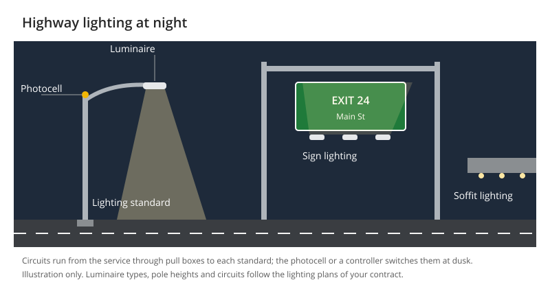

Highway lighting
In one sentence: highway lighting puts light where drivers need it at night: interchanges, ramps, signs and underpasses.

Main parts
| Part | What it does |
|---|---|
| Lighting standards and arms | Hold the luminaires. See Foundations: cabinet, pole and sign |
| Luminaires | LED fixtures; type and distribution set by the contract |
| Sign lighting | Lights overhead guide signs when required |
| Soffit lighting | Lights underpasses and structures |
| Circuits and service | Power from the service through the lighting circuits. See Service equipment and utility power |
| Controls | Photocells or controllers that switch lights on at dusk |
How it is built
Conduit and pull boxes, foundations, poles and arms, conductors, luminaires, then circuit tests and a night check.
PM notes
- Lighting poles near traffic may need breakaway bases; follow the details.
- Check voltage drop on long circuits matches the design; conductor size comes from the plans.
- Do a night inspection before acceptance: every luminaire lit and aimed.
Common mistakes / what Caltrans actually checks
- Wrong luminaire distribution type installed.
- Photocells facing the wrong way or covered.
- No night check before acceptance.